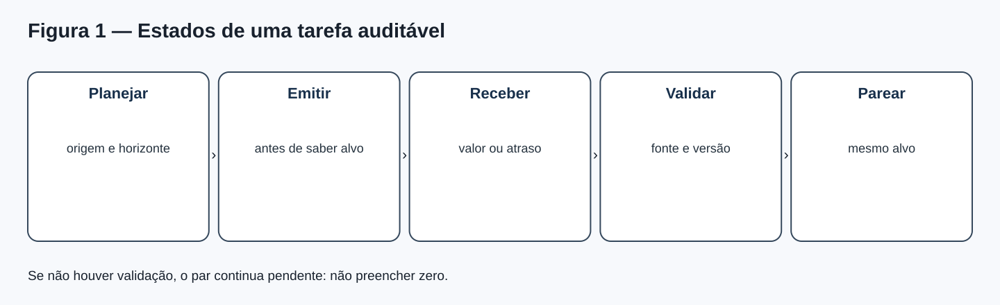
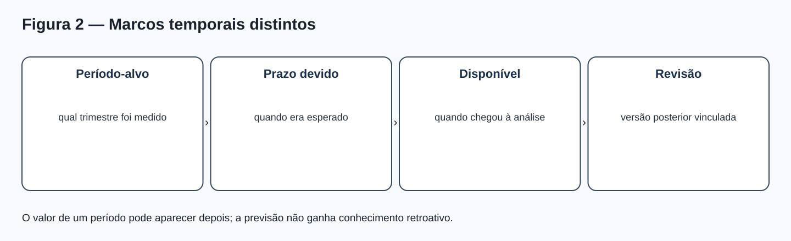
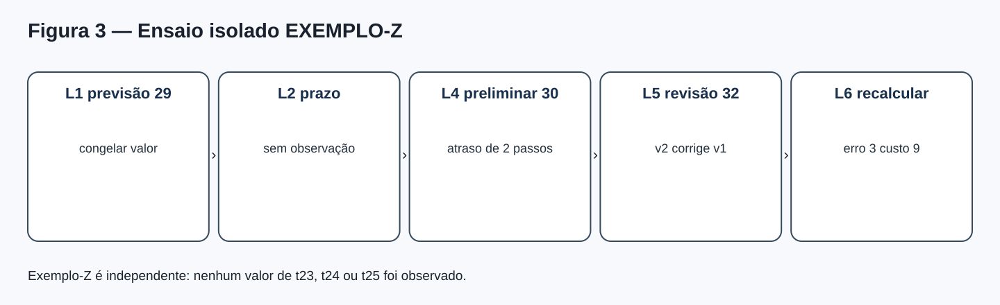
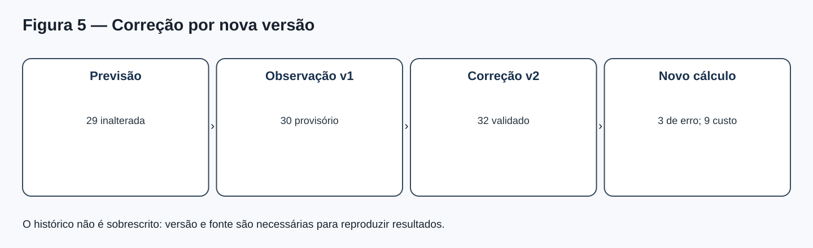
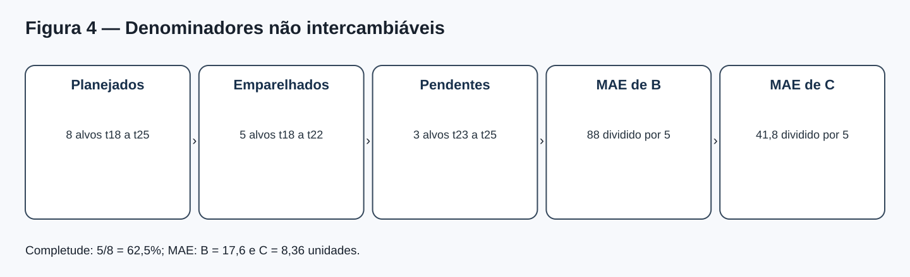
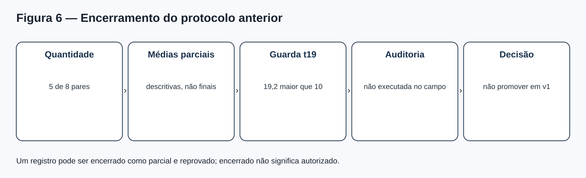

MAT-EST-052 — Ensaio operacional de monitoramento: integridade do registro, atrasos de observação e encerramento auditável
Área: Matemática. Unidade: Estatística — séries temporais / ponte universitária. Nível: 6. Anterior: MAT-EST-051. Próximo proposto: MAT-EST-053. Origem: aula, diagramas e exercícios autorais. Questões oficiais: zero. Progresso individual: não iniciado; a produção deste material não significa estudo nem aprovação.
Situação editorial e fronteira factual. Os períodos t01 a t22 constituem uma narrativa com dados inteiramente inventados. Os períodos t23, t24 e t25 não têm valores observados nem emissões autenticadas. A referência BASE-SNAIVE-v1, abreviada B, e o desafiante CHAL-SDELTA5-v1, abreviado C, permanecem sujeitos ao protocolo MAT-EST-049-PROT-v1. Os exemplos de eventos desta aula vivem no espaço separado EXEMPLO-Z-ISOLADO: são um ensaio de funcionamento, não observações da série nem prova de operação real. Os arquivos herdados foram copiados sem alterações.
Organização em três blocos: A — 30 a 45 minutos: identidade e ordem dos eventos; B — 30 a 50 minutos: atraso, validação, retificação e contas; C — 30 a 50 minutos: relatórios, encerramento, aplicação e exercícios. Não é uma matéria por dia; o avanço depende de compreensão demonstrada.
1. Objetivos, dependências e pergunta central
Após estudar e tentar as atividades, o estudante deve conseguir separar previsão planejada, emissão comprovada, dado recebido, dado validado e avaliação; identificar origem, alvo e horizonte; mostrar por que a ordem informacional importa; explicar os marcos temporais de uma observação — período que representa, prazo, data de disponibilização e data de revisão —; organizar eventos sem sobrescrita silenciosa; distinguir atraso, ausência, quarentena e valor zero; recalcular uma avaliação após retificação sem reescrever a previsão; escolher corretamente os denominadores das métricas; e redigir encerramento que não transforme documentação completa em autorização para promover um modelo.
Pré-requisitos: subtração, módulos, porcentagem e média; noções de variáveis, lógica condicional e sequência temporal; MAT-EST-031/032, MAT-EST-042 e o encadeamento MAT-EST-047 a 051. Em caso de dificuldade com 5 dividido por 8 ou com o sinal de um erro, reconstruir primeiro essa operação. Relação com exames: habilidades gerais de tabelas, gráficos, razão e interpretação sustentam ENEM e vestibulares; versionamento de avaliação de modelos constitui aprofundamento universitário, sem alegação de exigência específica por banca.
Pergunta motivadora. Se um resultado chega tarde, é depois corrigido, e alguém recalcula a previsão, qual dos números retrata o que se sabia antes da resposta? A avaliação séria exige uma trilha que preserve o passado informacional. Uma planilha com o último número disponível, mas sem histórico de quando ele apareceu, não basta para provar uma previsão genuinamente prospectiva.
2. Explicação intuitiva: previsão é compromisso antes da resposta
Pense numa prova entregue ao professor. Você pode corrigir seu raciocínio depois da devolução, mas não pode chamar a resposta revisada de resposta entregue antes da correção. O mesmo ocorre com modelos temporais. A previsão deve guardar qual origem foi usada, qual valor foi emitido, qual modelo o produziu, qual versão de dados estava acessível e como se comprova a ordem de emissão. Quando a observação chega, ela forma outro registro; quando é corrigida, a correção deve apontar para a versão anterior. Mais tarde, podemos calcular o erro com uma versão de dado explicitamente nomeada.
A abordagem de validação por origens móveis apresentada em Forecasting: Principles and Practice, seção 5.10, usa apenas observações anteriores ao alvo no treinamento e na previsão. O ensaio de log aqui é uma proposta didática para tornar verificável essa separação. Um hash calculado agora confere integridade do arquivo a partir de agora; sozinho, não prova que houve uma emissão na data histórica que alguém escreveu no registro. Essa prova depende de controles externos confiáveis, como autenticação, relógios, controles de acesso e arquivamento verificável.

Figura 1 — Estados da tarefa. Texto alternativo: planejar com origem e horizonte, emitir antes da resposta, receber dado ou atraso, validar fonte e versão, formar par com alvo comum. Observe: receber não equivale a validar. Conclusão por áudio: sem emissão demonstrável e sem observação validada, ainda não há um par final elegível para as métricas. Autoria: projeto, SVG original.
3. Uma linguagem formal para o registro
Uma tarefa é identificada pela origem o, pelo horizonte h e pelo alvo o mais h. A previsão do modelo m é escrita como (\widehat y^m_{o+h\mid o}). Leitura: valor estimado por m para o alvo, calculado usando informações disponíveis na origem. O erro assinado, se houver observação validada, é (e^m_{o,h}=y_{o+h}-\widehat y^m_{o+h\mid o}). Leitura: observado menos previsto. O sinal positivo indica subprevisão; negativo, superprevisão.
Para um registro auditável, cada emissão deveria ter event_id, protocol_id, model_version, origin_period, target_period, horizon, valor, unidade, input_data_snapshot_id, input_max_period, ordenação autenticada, versão do algoritmo e digest. Deve satisfazer: o maior período dos dados de entrada não passa da origem. Também se exige evidência de que a emissão precedeu o conhecimento do alvo. Previsões B e C para a mesma comparação precisam referir-se ao mesmo alvo, horizonte e convenção de dados disponível naquela origem.
Uma observação deveria registrar observation_id, alvo, fonte, valor (ou nulo), horário de disponibilidade, estado de qualidade, versão e, se for retificação, vínculo corrects_event_id. O vínculo é crucial: não se apaga a versão anterior apenas para que a base pareça limpa. A escolha de qual versão da observação vale no fechamento deve ser declarada no protocolo ou na política de avaliação.
Um par avaliável combina as duas previsões comparáveis com uma observação validada específica. Guarda os IDs dessas três evidências, erros assinados, módulos, custos e deterioração local. Identificadores permanentes impedem que a mesma observação seja contada duas vezes no mesmo conjunto de tarefa-alvo. Observação nula não deve virar zero nem uma previsão ilustrativa deve virar emissão autenticada.

Figura 2 — Período e disponibilidade. Texto alternativo: quatro caixas distinguem período-alvo, prazo esperado, momento em que o dado ficou disponível e revisão posterior. Observe: uma revisão pode alterar o valor conhecido para um período antigo sem mudar o que estava disponível na origem histórica. Conclusão por áudio: tempo representado pelo dado e tempo em que conhecemos o dado são dimensões diferentes. Autoria: projeto, SVG original.
Tempo de referência, prazo, disponibilidade e revisão
Um dado pode representar o trimestre t, mas só ser publicado alguns dias depois. Definimos, por convenção do exercício, o atraso como (L = \max(0,a-d)), em que a é a ordem ou horário de disponibilidade e d é o prazo estabelecido, na mesma unidade. Leitura: atraso é o maior entre zero e o instante de chegada menos o prazo. Essa medida só faz sentido quando prazo, calendário e unidade foram definidos previamente. Se um arquivo era esperado no segundo passo e chegou no quarto, o atraso foi de dois passos. Não é legítimo converter automaticamente passos didáticos em dias reais.
4. Exemplo guiado: ensaio isolado sem alterar a série
No espaço independente EXEMPLO-Z-ISOLADO, imaginamos uma previsão congelada de 29 unidades no passo lógico L1. O registro do evento identifica a previsão como fictícia, não como emissão histórica da série do projeto. A fonte deveria informar a observação em L2, mas nada foi recebido até L4. Em L4, chega 30, marcado provisório. Em L5, uma revisão validada corrige o mesmo alvo para 32 e aponta explicitamente a versão anterior. Em L6, o relatório recalcula os resultados usando a versão validada.
- A chegada provisória ocorreu no passo quatro; o prazo era o passo dois. O atraso didático foi quatro menos dois, isto é, dois passos.
- Com a observação provisória 30, o erro calculado seria 30 menos 29, igual a +1 unidade. Sob a regra congelada de custo assimétrico, o custo provisório é 3 pontos fictícios; ele não entra numa métrica final enquanto a fonte não for validada.
- Depois da retificação para 32, a previsão continua 29. O erro para a versão validada é 32 menos 29, igual a +3 unidades. O custo correspondente é 9 pontos fictícios.
- O evento de retificação referencia o evento do dado 30. O recálculo referencia a retificação; assim é possível explicar por que um relatório preliminar e outro final possuem resultados diferentes sem falsificar a sequência.
A regra de custo herdada é (C(e)=3\max(e,0)+\max(-e,0)). Leitura: três vezes a parte positiva do erro, somada ao módulo da parte negativa. A regra penaliza subprevisão três vezes mais que superprevisão de igual magnitude nesta simulação; não é padrão universal. O protocolo previamente documentado do projeto, MAT-EST-049-PROT-v1, não foi alterado.

Figura 3 — EXEMPLO-Z. Texto alternativo: L1 previsão 29; L2 prazo; L4 chegada provisória 30; L5 revisão validada 32; L6 recálculo de erro três e custo nove. Observe: a previsão não é alterada quando muda a observação. Conclusão por áudio: esta sequência demonstra versionamento sem produzir qualquer observação para t23, t24 ou t25. Autoria: projeto, SVG original.
Log apend-only e integridade
O arquivo dados/ensaio-eventos-EXEMPLO-Z.jsonl contém sete registros de ensaio, cada um com identificador, sequência, espaço lógico, tipo, payload, digest anterior e digest próprio. Para produzir um digest, serializamos os campos de cada evento em ordem determinística e aplicamos SHA-256; cada novo registro aponta para o digest anterior. Se um registro intermediário fosse alterado depois, uma verificação de toda a cadeia detectaria inconsistência desde que se retenha uma âncora confiável e se confira a cadeia original. Não se trata de assinatura digital nem de prova independente de data real. Os eventos são demonstrações didáticas, não logs operacionais externos.
A propriedade importante não é o nome em inglês, mas o procedimento: acrescentar um novo evento, preservando o anterior. Corrigir dado não autoriza editar silenciosamente o valor de uma previsão passada. Se a fonte estiver indisponível, criar um evento de indisponibilidade com valor nulo, motivo e tentativa de coleta — não inventar um número. Se receber um valor provisório, registrar a política de quarentena ou uso provisório, sem confundir com o conjunto final.

Figura 4 — Duas versões de uma resposta. Texto alternativo: previsão 29; observação provisória versão um igual a 30; correção validada versão dois igual a 32; novo erro três e custo nove. Observe: ambos os eventos observacionais permanecem. Conclusão por áudio: auditoria preserva o que foi conhecido em cada momento, inclusive evidências posteriormente corrigidas. Autoria: projeto, SVG original.
5. Dados atrasados, pendentes, inválidos e zeros verdadeiros
Quatro situações exigem respostas diferentes. Pendente: o alvo ainda não amadureceu ou a fonte ainda não publicou; não há valor. Atrasado: o prazo de entrega já passou conforme calendário previamente declarado; ainda não há dado elegível. Em quarentena: algo foi recebido, mas falta comprovar qualidade, fonte ou definição. Zero observado: a fonte validou efetivamente uma medida numérica igual a zero. Só o último é zero. Se o sistema substituir ausente por zero, tanto o erro quanto o custo podem ser distorcidos.
Exemplo numérico independente da série: previsão 12; fonte não entregou o resultado. Como não há observado, não é possível calcular 0 menos 12. Se, em outra tarefa, a fonte validasse um observado genuinamente zero, o erro seria −12, o módulo seria doze, e o custo assimétrico seria doze pontos. Mesmo símbolo gráfico vazio e zero exibido com fonte confirmada têm consequências radicalmente diferentes.
Também é essencial estabelecer uma política para dados que chegam depois do fechamento. Um relatório congelado precisa informar a versão de dados utilizada; um relatório revisto pode incorporar a nova informação, desde que identifique ambos, anote o motivo e evite misturar versões dentro da mesma métrica. Não há obrigação de usar sempre o primeiro ou o último valor: a pergunta avaliativa e o protocolo decidem qual versão é pertinente, mas a escolha não deve ser feita retroativamente para favorecer um modelo.
6. O que realmente se sabe sobre a sequência t18–t25
A narrativa anterior já possui cinco pares editoriais simulados t18 a t22. A tabela abaixo não inclui EXEMPLO-Z, que vive em um espaço independente.
| Conjunto didático | Valor | Significado |
|---|---|---|
| Tarefas planejadas t18–t25 | 8 | Oito alvos do protocolo anterior |
| Pares já documentados t18–t22 | 5 | Cinco comparações simuladas no material anterior |
| Tarefas futuras t23–t25 | 3 | Sem observação registrada e sem emissão autenticada |
| Soma de módulos B nos cinco pares | 88 | Erros absolutos da referência |
| Soma de módulos C nos cinco pares | 41,8 | Erros absolutos do desafiante |
| MAE parcial B | 17,6 | 88 dividido por 5 |
| MAE parcial C | 8,36 | 41,8 dividido por 5 |
Síntese para ouvir: foram planejados oito alvos; apenas cinco possuem pares no cenário didático anterior. A completude é cinco dividido por oito, equivalente a 62,5 por cento, mas a métrica de erro é calculada sobre cinco observações elegíveis, nunca dividindo a soma por oito. Os três alvos restantes continuam sem valores observados. Uma taxa de pontualidade exigiria, além disso, prazos reais ou lógicos previamente definidos e informações sobre quais alvos já venceram; não se pode chamar automaticamente as três tarefas futuras de atrasadas.
A média de erros absolutos, MAE, tem a forma (MAE=\frac1n\sum_{i=1}^n |e_i|). Leitura: somar o módulo de cada erro avaliável e dividir pelo número de pares válidos daquele conjunto. Se os três resultados futuros não existem, o denominador atual é cinco. A proporção de conclusão é outra fórmula: pares válidos divididos pelos pares planejados, ou cinco sobre oito. A contagem de pares deve considerar mesma origem, mesmo alvo e mesmo horizonte para os dois modelos, não duplicar alvos com lançamentos retificados.

Figura 5 — Cinco não são oito. Texto alternativo: oito alvos planejados, cinco pares simulados e três pendentes; MAE da referência é 88 dividido por cinco e do desafiante 41,8 dividido por cinco. Observe: o denominador de completude e o de erro respondem a perguntas diferentes. Conclusão por áudio: dados faltantes não entram como zero e não criam novos pares. Autoria: projeto, SVG original.
Previsões t23, t24 e t25: só o que foi realmente preparado
O material MAT-EST-051 forneceu recálculos ilustrativos, não emissões temporalmente autenticadas para t23: B igual a 183 e C igual a 199, computados com informações até t22. Os cenários alternativos 178, 191 e 209 para t23 são perguntas do tipo “e se”, não são medidas nem três amostras independentes. No plano condicional, chamando o futuro observado validado de t23 de x e o de t24 de z, obtivemos B24 igual a 181; C24 igual a 181 mais (x menos 128) dividido por cinco; B25 igual a 188; C25 igual a 188 mais (x mais z menos 305) dividido por cinco. Essas fórmulas não geram emissão válida sem os dados, versões e a sequência temporal correspondentes. Como não há observação válida para x ou z, não substituiremos variáveis por valores fabricados.
O caderno herda dez CSVs do pacote 051, incluindo seis arquivos históricos que esse pacote já havia preservado. Ele acrescenta somente novos artefatos explicitamente rotulados como ensaios (EXEMPLO-Z ou checklist); a base histórica e o protocolo de comparação permanecem byte a byte.
7. Encerramento auditável não é promoção
Um processo pode ser encerrado sob diferentes motivos: concluído com todas as evidências; concluído com decisão negativa; interrompido por qualidade insuficiente; ou fechado parcialmente para documentar limites de uma simulação. Encerrar não significa demonstrar desempenho superior, autorizar implementação ou dispensar revisão humana. Uma boa ficha de encerramento precisa enumerar o planejado, o efetivamente registrado, versões, datas ou ordens confiáveis, atrasos, correções, critérios, cálculos, limitações, responsáveis e decisão. Neste projeto, só produzimos uma ficha-modelo de encerramento editorial, não o fechamento de uma operação externa.
O MAT-EST-049-PROT-v1 exige oito pares e todos os seguintes requisitos cumulativos: MAE de C no máximo 80 por cento do MAE de B; custo médio de C no máximo 80 por cento do custo médio de B, conservando o peso três; nenhuma piora local de módulo acima de dez unidades; qualidade auditada; aprovação humana, controle de versão e possibilidade de reversão. Com apenas cinco de oito pares, ainda falta informação. Além disso, no alvo t19 o erro absoluto de C foi 23,2 contra quatro de B: a deterioração local, vinte e três vírgula dois menos quatro, é 19,2 unidades, acima de dez. Assim, não se promove C sob essa versão congelada mesmo que uma média parcial seja numericamente melhor. Dados novos não apagam a ocorrência anterior. Uma política alternativa exigiria outro protocolo explícito, nunca uma reescrita retroativa.

Figura 6 — Uma porta já falhou. Texto alternativo: cinco de oito pares, médias parciais, deterioração local t19 igual a 19,2 maior que dez, auditoria externa não executada e decisão de não promover na versão um. Observe: documentação e aprovação são etapas diferentes. Conclusão por áudio: um resultado parcial não invalida uma salvaguarda previamente fixada. Autoria: projeto, SVG original.
Modelo de relatório de encerramento, em linguagem verificável
Objeto e contexto: “Relatamos o ensaio editorial fictício de monitoramento e controle de versões, sem operação sobre dados externos ou instituições reais.”
Evidência e qualidade: “Estão documentados cinco pares simulados entre t18 e t22, enquanto t23 a t25 não apresentam observações registradas ou emissões autenticadas; os eventos de atraso e correção usam um conjunto de exemplo isolado.”
Resultados: “Nos cinco pares documentados, MAE de B é 17,60 e MAE de C é 8,36 unidades; a completude em relação a oito alvos planejados é 62,5 por cento. Em t19, o candidato apresentou deterioração local de 19,2 unidades, superior à guarda de dez.”
Parecer e limites: “O protocolo MAT-EST-049-PROT-v1 não autoriza promover o candidato. O relatório registra uma conclusão didática e uma estrutura de evidências; não demonstra coleta prospectiva de campo, validade populacional, aprovação humana nem testes de acesso no ambiente final.”
8. Erros comuns e ligações com outras áreas
Confundir zero e ausente é um erro de conteúdo e interpretação. Dividir a soma dos erros por oito quando só existem cinco pares válidos é um erro de estratégia de cálculo. Trocar o resultado de uma previsão após saber a observação é vazamento informacional e violação de protocolo. Usar uma correção sem preservar a versão anterior prejudica rastreabilidade. Assumir que a presença de um hash prova um horário de emissão passado confunde integridade com autenticação temporal. Recontar duas revisões do mesmo alvo como dois pares gera duplicação. Transformar uma média parcial favorável em autorização ignora guardas e decisão humana.
Aplicações: metodologia científica (registro antes de conhecer resultado e trilha de retificações), língua portuguesa (relatórios com premissas e limitações), computação (eventos, versões, testes de integridade), jornalismo de dados (diferença entre número preliminar e revisado) e gestão de operações (prazo, disponibilidade, auditoria). Nos exemplos, não há recomendação administrativa, médica ou financeira real derivada de números inventados.
9. Prática independente em três camadas
O arquivo exercicios.md apresenta dez questões de aprendizagem, dez de consolidação e dez autorais no estilo contextualizado de vestibular, além de seis itens de reteste. A descrição “estilo vestibular” indica formato cognitivo; nenhuma é questão oficial de ENEM, FUVEST, UNICAMP ou UNESP. Responda antes de abrir gabarito-comentado.md. Em cada correção, registre motivo provável do erro: conteúdo, interpretação, cálculo, distração, memória, estratégia ou tempo. O gabarito individual explica o raciocínio e evita apenas apresentar uma letra.
Autoverificação antes de corrigir: consigo definir a origem e o alvo? O dado é observado, provisório, cenário ou desconhecido? O denominador corresponde à pergunta? Sei mostrar a ordem em que a informação ficou disponível? A regra de decisão foi definida antes dos resultados? Minha conclusão explicita as limitações?
10. Vídeo complementar e fontes
Vídeo: Forecasting: Principles & Practice — 5.10 Time series cross-validation, canal OTexts, inglês, duração aproximada de 16 minutos e 35 segundos conforme índice público consultado (não aferida por reprodução integral). Assista depois da seção 3. Foi selecionado para reforçar o princípio de que cada previsão deve usar apenas informação anterior ao seu alvo. Não ensina sozinho a implementação do nosso log de eventos: essa parte está integralmente explicada no texto. O link foi encontrado no índice público do YouTube e associado à seção oficial do livro; a reprodução integral e os recursos de legendas devem ser conferidos antes da publicação.
Referências externas consultadas: Rob J. Hyndman e George Athanasopoulos, Forecasting: Principles and Practice, seção 5.10 — validação cruzada temporal. Croushore, Forecasting with Real-Time Macroeconomic Data, referência de apoio sobre revisões e versões de dados; seus exemplos empíricos não são transferidos para a base fictícia. Fonte interna primária para o caso: dados e protocolo preservados de MAT-EST-049 a 051.
11. Resumo para ouvir e revisão espaçada
Resumo por áudio: Uma previsão é um compromisso registrado antes da resposta. A observação pode chegar tarde, ser provisória ou receber uma correção. A retificação deve acrescentar evidência, não apagar o passado. Ausente não é zero e cenário não é observado. As métricas usam somente pares válidos, mantendo separado o total planejado. Cinco de oito significa 62,5 por cento de completude da narrativa, mas o MAE divide a soma dos cinco módulos por cinco. A falha histórica em t19 impede a promoção no protocolo original, mesmo que as médias parciais favoreçam o candidato. Um hash ajuda a detectar alterações em registros depois de ancorados, mas não comprova sozinho a data antiga de emissão.
Revisão após tentativa efetiva: aproximadamente um dia depois, reconstruir o fluxo de estados e explicar nulo contra zero. Após sete dias, refazer EXEMPLO-Z com erro, custo e correção, e demonstrar os denominadores. Após trinta dias, resolver os itens de reteste sem consultar o gabarito e redigir o parecer de quatro parágrafos. Essas datas devem ser contadas da sessão de estudo real, não do dia da geração editorial. O tópico só poderá ser considerado consolidado se o estudante explicar o fluxo, resolver contas, interpretar situações novas e recuperar a ideia numa revisão.
Próximo tópico editorial proposto, não iniciado: MAT-EST-053 — Qualidade e versionamento de dados temporais: proveniência, reprocessamento e políticas de avaliação por versão. Manter t23 a t25 não observados enquanto não houver evidência legítima, e não inventar execução operacional anterior.
Limites de produção: pacote criado localmente; não houve sincronização no Drive, integração no GitHub, deploy, teste real do Edge ou reprodução integral do vídeo. A prévia PNG é ilustração original e não captura do site. Nenhuma tentativa do estudante foi recebida; progresso individual preservado.